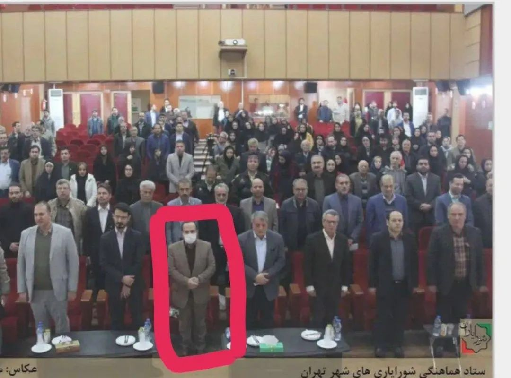
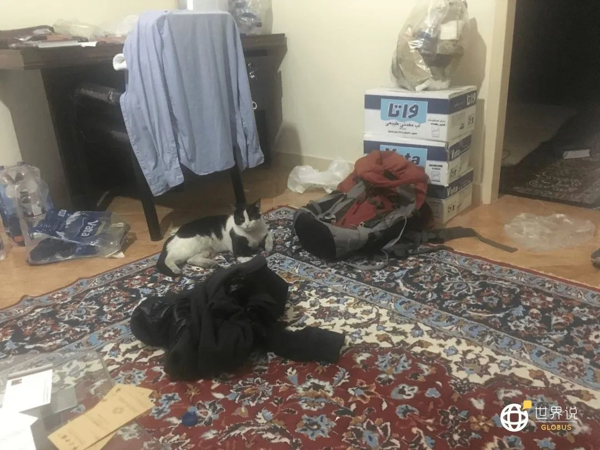
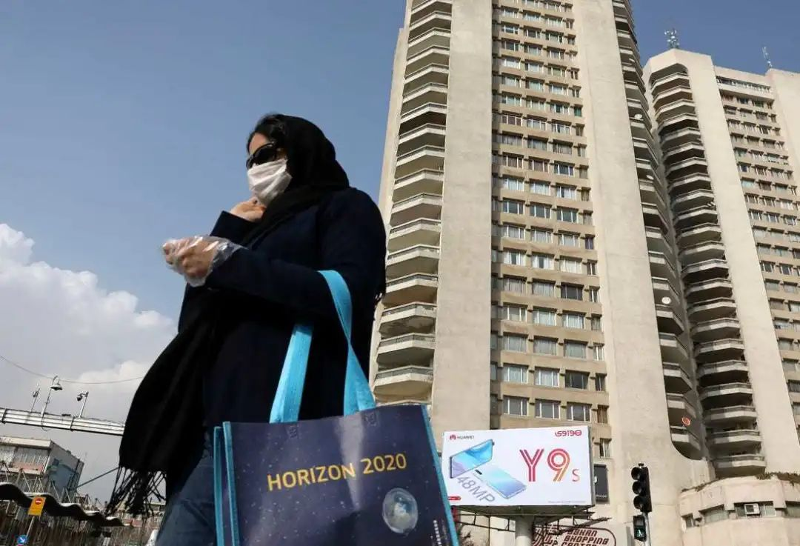
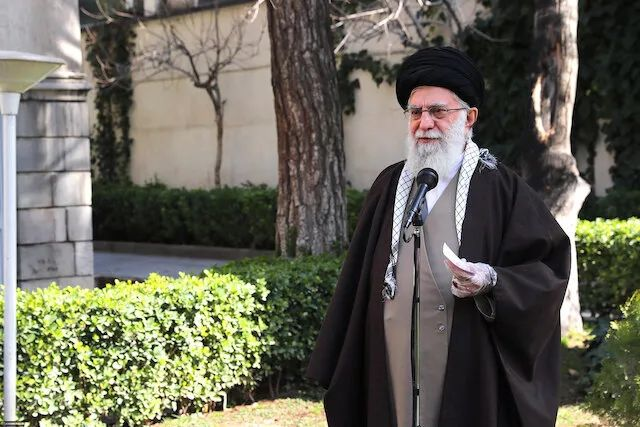
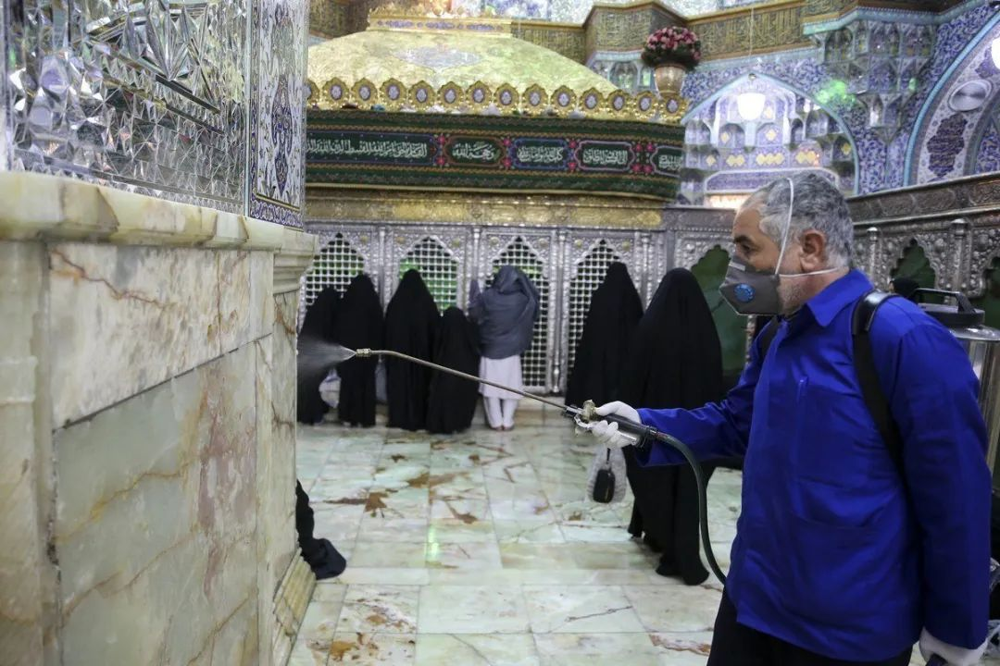
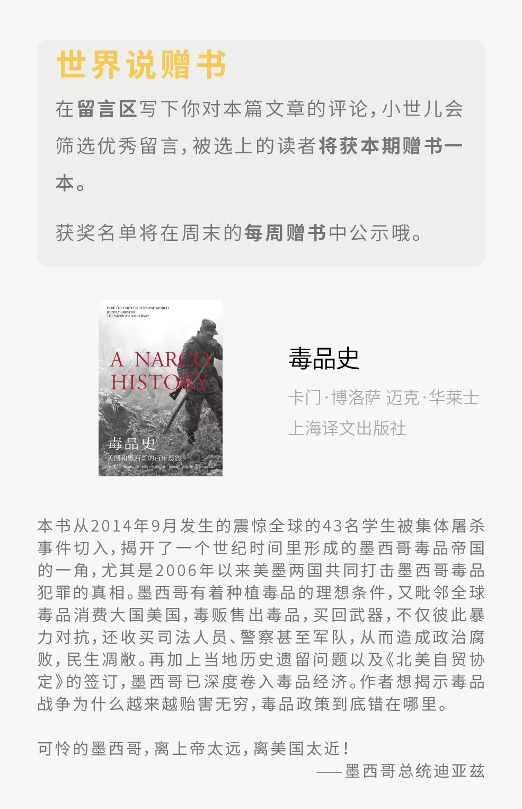

伊朗为何成了中东疫情重灾区，他们如何有效抗疫？
原文链接 备份链接 虽然多数民众情绪表现稳定，但药店里口罩、酒精、消毒水已经被抢购一空。长期遭受制裁的伊朗，在医疗物资、医疗条件上确实没有办法应付疫情大规模爆发而产生的医疗需求上升。 2020年2月21日，伊朗纳杰夫国际机场，工作人员为旅 …

编者按
本文是作者自2月21日至3月1日在伊朗首都德黑兰写下的生活日记。
对比其他国家，伊朗异常紧张的国际处境、多年制裁下脆弱的经济和深入到社会生活方方面面的宗教传统，都影响着它面对疫情的态度。从2月20日晚间伊朗首次宣布在境内发现新冠疫情开始，至3月1日累计确诊人数达到978例且出现多位高官感染，短短十天内伊朗经历了对病毒从无视到重视，从嘲笑到紧张的剧烈心态变化，而疫情发展直到今天仍在继续。
截至3月5日，伊朗确诊病例人数已达3513例，而本文作者仍在德黑兰家中，等待疫情转折点的来临。生活也在继续。
2月21日 周五 晴
昨晚消息传来，伊朗终于宣布库姆出现两例确诊病例，两人全部死亡。参考中国冠状病毒的死亡率，这是几百人染病的节奏。
当时心里有点紧张，在想政府要不要把第二天的议会选举推迟几周控制下疫情。打开手机看伊朗政府电视新闻直播，官方媒体还是鼓动百姓上街参与议会选举投票，强调候选人是谁不重要，投票就是扇美国人耳光。
做自己事时老想着别人怎么想，这是不自信的表现。也许是保守派控制的宪法监护委员会自知取消了太多改革派人士的参选资格，伤害了民众投票积极性，心虚了吧。
伊朗政府一位著名的网评员Kashani在推特上指责部分伊朗人散布冠状病毒恐惧打击民众投票积极性，“下流肮脏”。

● 伊朗亲政府网评员Kashani的twitter帐号 / 网络
也许是年初苏莱曼尼被杀，革命卫队又误击客机，体制的信誉受损，这次政府顶着疫情搞议会选举，明显是要指望靠投票率挽回面子。这也不奇怪，有些伊朗人就是把面子看得比生命还重要。
哎，别人家的事，我就别操心了。大周五的，天气不错，去800米外Nayeb路口的居鲁士超市（这名字真气派，中国没人敢把超市命名为秦始皇吧）买菜买米，路边经过一幼儿园，一大兵拿着AK47，黑洞洞的枪口晃来晃去。
我倒吸一口冷气，往幼儿园里探头一望，原来是地区投票站。里面空空如也，几个工作人员在懒洋洋地晒太阳。这投票率看来要黄。想拍个照，但瞟了眼那AK47，还是算了。
大周末的，超市里人也不多，买了两斤鸡肉，一条鱼，一袋米。最近囊中羞涩，买了印度进口的米——伊朗本国北方吉兰省产的大米口感好，比进口米贵很多，这也是个奇观。
回家后，看到卫生部宣布德黑兰出现四例确诊，全国18例，死亡四例。消息竟然传到国内父母那了，他们很担心。我让他们还是多关心下自己。
晚上得知伊朗地区盟国伊拉克宣布关闭与伊朗边境。春江水暖鸭先知，看来伊朗这事态不容乐观。
2月22日 周六 阴
虽然有很多担心，还是咬咬牙上班去了。
合作伙伴是个伊朗公司，早上一到就跟伊朗朋友说，明天在家里干活吧，这疫情可不是闹着玩的。他觉得我是戏精没当回事，但我一再坚持，最后他同意每天包辆车送我上下班。
中午朋友去法院处理官司，回来后神采奕奕地说：“今天我朋友、司法部副部长跟我说不必害怕病毒。病毒是政府故意散播出来的传言，这样老百姓就不敢上街聚集示威了。”
这朋友家境不错，在德黑兰富人区住着自带200平庭院的大别墅，财富在伊朗能进前50，算是伊朗顶层精英人士，可他怎么能相信这么幼稚的阴谋论呢？
下午坐公司包的车回家，看到街上没几个人戴口罩，伊朗人真是心大。可为啥公司楼下的几家药店全都贴出告示说口罩售罄呢？莫非有奸商在囤积居奇？哎呀，我怎么也阴谋论起来了，丢人。
车里刷新闻，看到德黑兰第13区区长冠状病毒检测阳性，新闻下面附了一张前天的新闻图片，显示他参加了德黑兰市议会会议，而且坐在市议会议长莫森旁边。冠状病毒还挺讲政治正确性，各阶层的人都照顾。

● 20日的德黑兰市议会协调会议，前排戴口罩者一天后查出感染，其右侧为市议会议长、前总统拉夫桑贾尼之子莫森 / 网络
下一条新闻，迪拜两例输入病例，全是伊朗人。昨天好像伊拉克、黎巴嫩也各一例伊朗输入，伊朗俨然要成大疫区的节奏。这输出比例，也让人担心伊朗到底有多少人染病了。
打开微信，跟在伊的华人哥们聊天，讨论如果迪拜也像伊拉克那样中断跟伊朗的航班往来，考虑到疫情下中东飞国内的航班只剩阿联酋航空一家，那我们有事要想回国只能坐不靠谱的俄罗斯航空了。而后，我又在网上搜了搜战斗民族飞行员给乘客带来的各种极致体验，肾上腺素略有分泌。
晚上看看伊朗的官方新闻，疫情爆发地库姆圣墓管理人萨伊迪教长反对关闭圣墓，反对取消周五聚礼。在他看来，认为圣墓是治愈疾病的场所，不是感染源。在我看来，疫情面前，科学与宗教如何平衡是伊朗政府面临的一个大问题。
据伊朗政府官方数据，今日新增病例10例，德黑兰2例，全国总计28人染病，5人死亡。跟朋友说，明天不去上班了。
2月23日 周日 雨
政府宣布大中小学停课三天，公交地铁也开始消毒。这是好的迹象。不管政府面上怎么轻视病毒，该做的政策已经开始做起来了。
朋友发图片说，德黑兰最大的Hyperstar超市货架空了，城北革命卫队大道中产阶级聚居区的超市货架也空了大半。
这有违我这几天的感受——身边伊朗老百姓一直心大如海，怎么会去抢东西。不过，我还是忍不住去平时经常光顾的肉店考察一番。还好，各类肉品充足。
给肉店老板介绍了饺子这种食物，然后请教他用小牛肉好还是上脑好。最后他切了二斤上脑肉，绞成馅，包给了我。48万里亚尔。又让他拿给我一条鸡胸肉喂楼下的流浪猫，凑个50万的整（约合83元人民币）。
看看你们这帮伊朗中产阶级，平时自诩为文化精英、社会翘楚，天天指点江山骂政府贪污腐败，凡事都讲Baclass(洋泾浜波斯语，意为“上档次”)，现在疫情来了，你们却像个没档次的人，竟然去超市哄抢物资。我们南城这片伊朗普通小老百姓，平时没啥文化，大难面前倒是淡定自如，没人抢购物资，肉店里不仅肉品齐全，还有余量给流浪猫享用。
巷子里的流浪猫，跟我都熟。最亲的是个奶牛猫，情商高，见我就翻肚皮，还会一路跟我上楼到家里，肉饱饭足后就趴在地毯上睡觉，睡够就喵喵一叫，开门走人，有点“我不纠缠你，你别纠缠我，我们再见面依然是朋友”的风骨。

● 奶牛猫在作者家里的地毯上 / 世界说
还有一只灰背白腹的“喜喜”，平时蹲在巷口小卖部的货架下，一见到我路过就喵喵地蹭着我叫。我腿都迈不开，只好去小卖部里买培根给她吃。我怀疑她一定是接受过小卖部的秘密培训。
我最熟的流浪猫是米休，一只三花母猫。她性格十分内向，从不向生人乞食，巧的是我刚搬到这里来时，第一个喂的就是她。她当时还带了一个2个月大的孩子，活泼可爱。一个月后的雨夜，她的孩子在车轮下殒命。她三天不吃不喝，朝孩子死去的地方嚎叫。
那天晚上看到雨大，我琢磨着想把她孩子放在屋里过夜，后因手头事情过多忘记了。不想一念之差，人猫阴阳两隔，内心愧疚至今难散。
今天买了鸡肉，在巷子里看到了她，赶紧走过去喂。对面巷子的大姐萨拉女士正好也出来准备投食。她是米休的“主供养人”（我平常主要喂那只奶牛猫），去年因参与示威抗议德黑兰市政府滥杀流浪动物被关了8天。据她讲，疫情爆发后，很多人都以为流浪猫能传染冠状病毒，纷纷驱赶流浪猫，平时很多喂猫的人也不再喂了，加上这几天晚上阴雨绵绵，小可爱们的日子非常艰难。我答应她平时会多照顾米休和其他的流浪猫。
我又想起了米休罹难的孩子。人类何其强大而冷漠，司机一个不小心就让母猫失去自己的孩子。而人类又何其脆弱，冠状病毒宛如天上众神醉酒后的马车竞技狂欢，命运的车轮下多少生灵涂炭，多少家破人亡的哀恸！
2月24日 周一 晴
这几天宅在家，没事刷推特，看看疫情怎么样了。今天遭到了高官出格言论的密集轰炸。
鲁哈尼：很多人是自然死亡的，凭啥怪罪冠状病毒？我：吃惊的表情。
韦拉亚提：冠状病毒的危险性还不如流感。我：下巴掉了。
伊朗国家电视台专家：戴口罩不如勤洗手。我：疑惑。
卫生部副部长：病毒事不大，刚开始可以在家休养喝水吃维生素，病情严重了再去医院。我：终于明白为啥伊朗冠状病毒死亡率高了，你没统计轻症病人！
卫生部副部长：城市隔离是一百年前的过时政策，中国搞隔离百姓不开心，我们不搞！我：好像有那么点道理……
库姆周五聚礼领拜人：多读经书圣训不得病。我：这好像是1300年前的做法，比隔离还古老……
伊朗政府试图作出一副病毒无害的姿态，这倒是可以理解。伊朗现在经济凋敝，搞隔离，经济会垮，民众还会抢物资造成物资短缺社会动荡。保经济与绝对控制疫情只能管一头。不隔离，社会运行平稳，百姓吃喝工作一切正常，只是这疫情要扩散了。
疫情中心库姆是各国什叶派的朝觐地，这波疫情已经通过伊朗扩散到中东各地，科威特3例输入，巴林2例输入，阿曼2例输入，伊拉克1例输入。伊朗开始被各国隔离。亚美尼亚、阿富汗、土库曼斯坦、巴基斯坦和土耳其先后关闭了跟伊朗的边境。土耳其好像还有点不好意思，卫生部长出来假惺惺地说：“你要是早点把库姆隔离，我就不关闭边境了。”

● 位于库姆的法蒂玛圣陵。这里被视为伊朗最神圣的圣地之一，每年都有大量什叶派穆斯林前往朝圣 / Wikipedia
这几天社交媒体上关于疫情源头的讨论比较丰富多彩。官方媒体上先后有中国工人输入说，库姆商人途径中国输入说，中国宗教学生输入说，但先后被质疑否认。但不管怎样在伊朗人心里，中国就是病源，大家纷纷质疑中国疫情爆发后，马汉航空为啥不停航。
我比较担心，到现在零号病人还没找到，这疫情貌似控制起来有困难。
2月25日 周二 雨
昨天口口声声说冠状病毒大多数患者可以在家休养的卫生部副部长哈里里奇，今天发了个自拍，宣布自己得了冠状病毒，并承诺自己两周之内就出院，伊朗一个月之内战胜病毒。他说话时气色不错，面带笑容，声音浑厚中气十足，看起来不像个生病的。
昨天看他在政府发言人拉比伊身边讲话时，不停擦汗，就觉得不对劲。不过现在最害怕的人应该是拉比伊了吧！在病号旁站了半小时，要知道在中国有人跟病号接触15秒就染病了！
晚上约了个伊朗老友出去喝咖啡。她是个诗人，出版过自己的诗集，现在每周二去上个博士课程。
咖啡店依然熙熙攘攘，也没人戴口罩。老板淡定地解释每个小时都用消毒液清理桌面、厨房和各个门把手。店员也嘻嘻哈哈，不太在乎病毒的事，因为“要担心的是老年人”，而他在德黑兰跟女朋友租房子同居，不回家，也不会感染到年事已高的父母。
诗人上来跟我说，你看看，病毒从中国来了吧。不过，说起中招的政客，她又很欣慰，认为病毒“很有正义感”，希望教长们全都病死，然后伊朗人民就可以获得解放。
还好咖啡厅音乐开的很大，没人听见她说什么。
后来，说起了她在库姆上课，进校园时要在手面涂固体酒精消毒。现在停课了，很想出去旅游，但钱包过瘪只好作罢，改成每天去健身房。健身房也有些防护举措，进门每人一副一次性手套，避免病毒传播。
我约她时竟然忘了她是要去库姆上课的。不过算了，要信任朋友，不要因疫情伤害友谊。否则有一天挺过疫情活下来，朋友却没了，那活着还有什么意义呢？
2月26日 周三 雨
今天，议会国家利益委员会主席努尔祖尔也确认自己感染冠状病毒了。自拍视频中，比昨天的哈里里奇还抖擞。病毒的政治正确性在延续。
前两天，有条新闻在伊朗华人圈引爆，一个中国姑娘和她伊朗老公囤了50万个口罩，结果被德黑兰军警抄家罚没。大家纷纷指责她发黑心财，破坏国人的形象。

● 德黑兰街头，一名戴口罩的路人 / 网络
今天新闻的细节出来了，这姑娘是在伊朗疫情爆发前囤的口罩，准备跟她老公一起卖到当时已经深受疫情影响的欧洲。不料被邻居举报，警察从天而降，辛辛苦苦收购的物品打了水漂。
有了这些事实，这事可以说反转了。
首先，这两口子并没有在伊朗疫情期间囤积居奇。伊朗政府无权没收他们的物资。其次，这两口子也没利用疫情高价售卖口罩，50万只口罩被查抄时正老老实实地在家里躺着。最后，根据伊朗不成文法，“四壁之内皆自由”，军警无权私闯民宅。这次借疫情之名，强力部门破坏官民共识私闯民宅没收私人物品，将对未来民间自由的尺度产生长远负面影响。
当然，这事最膈应人的是邻居的告密。诚然，人人都是长舌妇（夫）是伊朗突出的（负面）文化特点，伊朗政府对内反情报工作屡有斩获，八卦文化盛行功不可没。可邻里之间何必互害呢，毕竟大家住在一起，抬头不见低头见，没事打小报告陷邻里于囹圄，以后大家还怎么一起过日子？
爱好举报的伊朗邻居可能是世界上最招人烦的人群（之一）。
2月27日 周四 晴
今天感染人数一下子增加了105例。日增量首次破百情况不妙。不过之前站在卫生部副部长旁边的拉比伊先生冠状病毒检测居然阴性！
考虑这些高官们得病后的自拍里都红光满面，我不得不质问：你们不会是诈病吧？然后跟老百姓说得了病啥事没有，结果老百姓继续心大地在街上不戴口罩。阴谋论又来了，我要自省。
下午，领袖哈梅内伊关于冠状病毒的讲话视频发布，赶紧打开看。

● 身边的顾问近日因新冠肺炎身亡后，哈梅内伊的健康问题也成了各界关注的焦点 / khamenei.ir
要知道，每每到关键时期，领袖讲话都有一锤定音的作用，09年学潮，17年底反体制示威，再到今年初误击客机引发的民众抗议，只要领袖出来讲话，就表明事件要被平息了。
可这次的讲话却显得平淡无奇。讲话视频不到2分钟，感觉哈梅内伊神态有些疲惫，他只是表扬了医护人员和卫生部长，希望病毒尽快过去。
卫生部被点名表扬，大抵封城是不会发生了。可他也没表明什么具体的态度，毕竟病毒比政治反对派狡猾难缠，枪炮军队都用不上，不是你想镇压就能镇压得了的。
晚上，在家又待不住了。打个车去城北富人区的AVA购物中心，买个阿玛尼的衬衫。一进门就有人测体温，电梯按钮旁有抽纸，部分工作人员戴着口罩。
德黑兰的大型公共场所似乎慢慢开始把冠状病毒当回事了，也许冀望通过大张旗鼓地搞消毒，让消费者更安心的前来消费。可这些防疫措施怕是吓到了消费者，商场里没几个人，往常热闹的美食广场只有一桌人在吃饭。
来到二楼阿玛尼专卖店，之前心仪的那件衬衣约合700块人民币。打开手机银行查了查卡的余额，钱够，可转眼一想，万一疫情加剧钱庄关闭，没人敢去银行给我打钱了，我不是要喝西北风去？
算了，肚子比衣裳重要。阿玛尼不买了。上楼喝个20块的水果奶昔解解闷。
打车回家的路上，翻出手机看看微博，又看到有些没心肝的小年轻颐指气使地要这个那个国家“好好抄中国作业”，气不打一处来。武汉人和湖北人的封城血泪换来了疫情控制，你们不去对逝者忏悔，反而拿着逝者的贡献给自己脸上贴金。
也许，只有疫情中的逝者——尤其是牺牲的医务工作者——有资格跟外国说该做什么，不该做什么，因为现在的胜利是他们博来的。
可他们已经没法开口说话了。
伊朗固然文化保守，但这丝毫不减波斯文化对个人价值的尊重。陀思妥耶夫斯基不也说，要牺牲一个小女孩来拯救世界都是不允许的。
另外建议您读读霍桑的《红字》，学学主人公海斯特是怎么让胸前字母A从Adultery 变成Angel的。
2月28日 周五 晴
伊斯兰共和国成立41年来，从未中断过的周五聚礼，在全国范围取消了。一场集体自杀行动得以避免。
在疫情面前，信仰终于向科学让了步。库姆开放的圣墓，也接受定期人工消毒了。几天前叫嚣圣墓能治病的萨伊迪教长，开始劝导人民采取必要的卫生防护措施。
那么疫情过后，教长还怎么在信众内心重塑宗教权威呢？经书中经常提及，城市不敬神时，神将降下瘟疫与洪水毁灭一个城市。
然而，在什叶派版本的《圣训》里，疫情发源地库姆可是宗教圣城啊，“通往天堂的八个门有三个在库姆”。如今，库姆却成了死亡病疫的源头，传染了伊朗乃至整个中东。
伊朗的阿亚图拉们得加紧研究教法，给出符合科学精神、有益于抗击疫情的宗教指示。

● 伊朗库姆，一名工作人员正在为宗教场所消毒 / 网络
2月29日 周六 阴
早上打开手机一刷推特， 之前指责舆论借冠状病毒打击伊朗民众投票积极性的网评员Kashani先生竟然感染冠状病毒病逝了。伊朗一日确诊病例增加了209例，增速越来越快。
外面下雨，空气质量不错。穿衣下楼，准备去客运南站（发往库姆的大巴和出租车就在这个车站）拍拍民众日常生活视频。院里大门一拉，跟楼上住的老太太撞个满怀。
邻居老太太气喘吁吁地跟我说，刚刚离我家300米远的革命广场电影院前大道上，一名老者疑因冠状病毒突然倒地昏迷，被救护车拉走。得知我的去向后，她直接把大门把住，警告我：“现在这样做很危险。”
历史已经屡屡证明，邻里关系很重要。出于对她的尊重，我悻悻地回了家。这老太太之前还嘲笑我戴口罩小题大做，现在突然这么谨慎，看来在伊朗人心里，疫情形势确实恶化了。
惜命是人世俗情感的表现。当年图便宜，租房子时选在革命广场这片宗教气氛浓厚的地区，好在住在这一栋楼的都是世俗开明好说话的邻居，宛如沙漠里的绿洲，吾心甚慰。
躺在沙发上在网上搜了搜视频，发现老太太说的确有其事，而且除了这个案例，还有7个类似的病人倒地视频。视频最早都是反对派账号放出来的，也不知道视频里的人是不是真的因冠状病毒躺了，可这个节骨眼上看到这样的视频，心里瘆得慌。
3月1日 周日 中雨
新增确诊病例385人，数字又创新高，情况有失控之虞。
我后知后觉地发现，中国驻伊朗大使馆公号在昨晚发消息，建议在伊华人不要擅自经第三国返伊朗，并组织大家登记个人信息，暗示必要情况下会安排航班组织华人自愿撤离。
走还是不走，这是个问题。
大多数人是想走的，因为国内疫情基本得到控制，而伊朗的形势却日趋严峻。走，就是逃出生天。
但我在犹豫。
回国了，也许安全了（最多隔离14天），但是我有资格分享国内百姓从疫情存活下来的欣慰和安全感么？当武汉和湖北很多绝症患者得不到药物而病情加重甚至死亡时，当全国各地的民众在本应喜庆团圆的春节躲在家中战战兢兢地生活时，当浙江医生在隔离期间因心爱的猫咪被社区负责人强行活埋而悲痛欲绝时，我却在海外放心地呼吸户外的空气、无忧地旅行逛商场、与楼下的流浪猫嬉戏。
回国了，我将永远低头生活，因为我是逃兵，不曾与同胞共砺苦难。也许依然可以和好友们一起喝酒撸串，但我的灵魂将永远沦为孤岛。
现在，身在全球疫情新中心伊朗，兴许是自我发现和救赎的机会。如果能够留在这里，成为疫情事件的一部分，经受一切，保护自己，尽力帮助邻里，然后活下来，说不定还可以昂首回国。
可是，如果我死了呢？
回，还是不回，这依然是个问题。
（责编/张希蓓）

点击图片直达往期精选


点击下方“阅读原文”查看世界说专题“全球疫情追踪”。
原文链接 备份链接 虽然多数民众情绪表现稳定，但药店里口罩、酒精、消毒水已经被抢购一空。长期遭受制裁的伊朗，在医疗物资、医疗条件上确实没有办法应付疫情大规模爆发而产生的医疗需求上升。 2020年2月21日，伊朗纳杰夫国际机场，工作人员为旅 …
原文链接 备份链接 “伊朗应对地震很有一套， 但是传染病防控，他们实在没经验” 视频截图：哈利其（图左）在发布会上不停擦汗。 当地时间2月25日，伊朗卫生部发言人、副部长哈利其（Iraj Harirchi）新冠病毒检测呈阳性。稍晚些时候， …
原文链接 备份链接 新冠疫情让处于美国制裁中的伊朗经济雪上加霜，也给本已激化的社会对立火上浇油，对于伊朗政权而言，眼下可能是伊斯兰革命40年来最危险的时刻 *************************李斯洋 | …
原文链接 备份链接 如果新型冠状肺炎疫情成为全球性的大流行病，经济衰退就难以避免。在接下来的几周里，美欧股市可能还会有更多糟糕的日子。2月28日中国沪深A股和中国香港股市开盘后，亦出现较大幅度的下跌 文 |《财经》特派记者 金焱 发自华盛 …
原文链接 备份链接 世界卫生组织官员对韩国和伊朗等地爆发新冠病毒疫情表示担忧，但表示情况尚未上升到大流行病的程度。在美欧金融市场，这一模式已变得清晰：新增确诊病例数=增加的市场恐慌=疲弱的资本市场。这一模式会否必然在中国出现，尚待观察 …